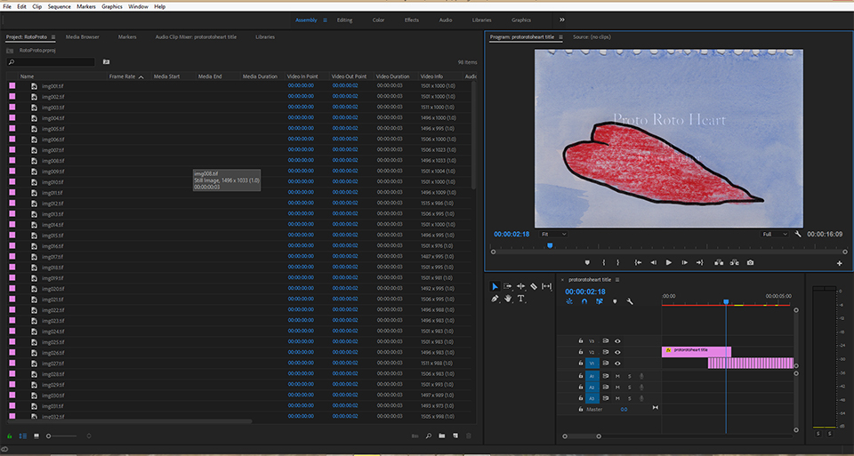
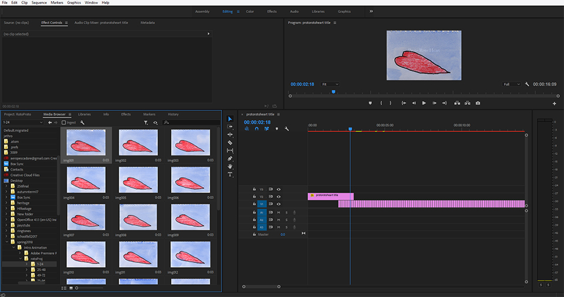

Scanning is a tedious task but it is the final step before the files become digitized after which you will be manipulating them non-destructively on your editing suite.For this step I have used an Epson Perfection V39. It is one of many reasonably priced scanners on the market. I scanned my images as .tiff files at 300 ppi because I love the delicious textures and colors that a high resolution image has. Although the large file sizes seemed to work fine in Premiere I found that they broke DragonFrame. I would recommend scanning at a lower resolution if you are not sure about your ability to process large files.

Prepare a folder for your scans
Scan frames 001 to 096
Think about what normal people might be doing right now
Convince yourself that it is alright that you havent seen daylight in a week
Edit
Editing for this project is a simple matter of setting the framerate and then dropping each image into the sequence at the place that you want it to be seen. I set my frames to be viewed for a slightly longer time in order for the progression to be more easily seen. If not, that entire 96 frames would only take up three seconds of film! It's good to get into the habit of including a title card and a credits card with any of your work.

Boot up Adobe Premiere
Import your files to a Media Library OR pull them up on the Media Browser
Set the amount of time in 24th of a second intervals which you want your frames to be seen. For example I set my frames to be viewed for 1/12 of a second
Build a title card and an end card for your project
Place your frames in sequence between the title card and the end card
Imagine your friends all together in one place at some very enjoyable party, at this point they have moved on with their lives and you are a distant memory
Export
Premiere offers many formats which you can export your content into. I exported my content as an mp4 and then uploaded it to Youtube.
There are many video hosting sites on the internet. I use Youtube due to it's ubiquity. Vimeo is another option and I'm sure that a quick search will turn up many more.
Export your sequence in the format of your choice
Upload your content to a streaming video service
Share your creation with the world
Do one of two things:
Draw back your curtains, interact with other humans, try not to dream about it too much ...